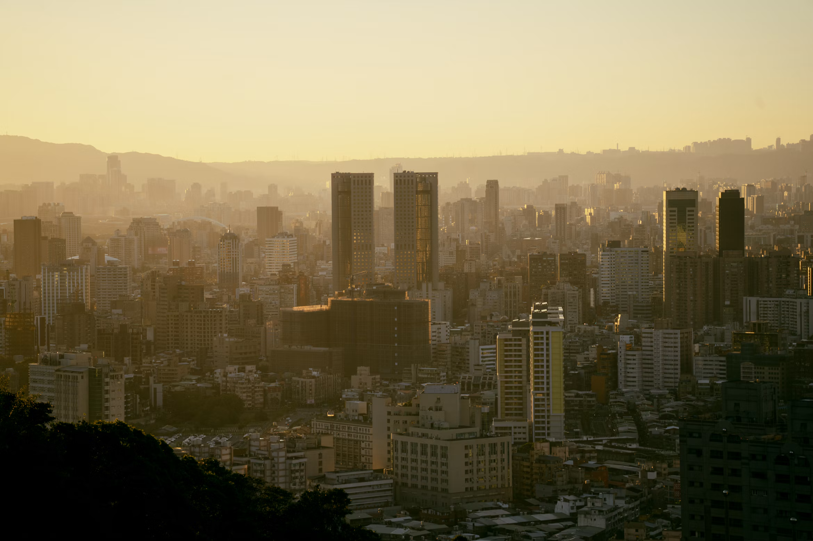

[ Behind the scenes ]
Behind the scenes.
Four days in Wollongong, eight loads and one beach landing zone. The crew between jumps.

Rigging the helmet cameras before load three.


[ Promotional · 2026 ]
A promotional film for Australia’s highest tandem skydive: 60 seconds of freefall over the Wollongong coast, made for the first-timer who keeps putting it off.
[ The project ]
Skydive Australia started in 1999 on the Wollongong beachfront with one six-seater Cessna. It now flies tandems from up to 15,000 ft at drop zones across the country, and Wollongong is still the jump most people picture.
[ 01 ]
Turn “one day” into a booking. Most people who look at a tandem skydive want to do it, then put it off. Skydive Australia needed a hero film and social cut-downs that make the jump feel close, safe and worth doing this season.
[ 02 ]
“Sixty seconds.” We follow one first-timer from check-in to touchdown on the sand at Stuart Park, and give the freefall its real length. The nerves on the ground make the minute in the air hit harder.
[ Behind the result ]
Cloud and an onshore southerly grounded the aircraft for half the shoot. Every aerial shot had to fit two three-hour weather windows.
Freefall lasts about 60 seconds and nothing resets. Each new attempt meant a 20-minute climb back to altitude.
There’s no gimbal at terminal velocity. Our camera flyer shot on helmet rigs at around −10 °C, with lenses fogging on the way down.
Each jump got its own shot list, so no two loads covered the same angle. Eight jumps, a full edit, nothing wasted.
Cuts that opened on pre-jump nerves held viewers longer than cuts that opened in freefall. The reaction is the hook.
A second flyer filmed 9:16 on the same jumps, so the social cut-downs never needed a reshoot.
[ Colour palette ]
We kept the colour close to how the day looked: deep coastal blues, clean highlights and warm sand for the landing. Swatches sampled from the final grade.
[ Behind the scenes ]
Four days in Wollongong, eight loads and one beach landing zone. The crew between jumps.
Rigging the helmet cameras before load three.

[ Result ]
First 90 days after launch, across organic and paid social, YouTube and the Skydive Australia website.
Hero film and cut-downs, all platforms
Average on the 30-second cut
Wollongong drop zone, year on year
Paid social, Meta and TikTok
[ Views by platform ]
[ Delivered ]
[ Credits ]
[ Similar projects ]
[ Connect with us ]
We take the time to understand your needs, starting with a no-pressure discovery call.